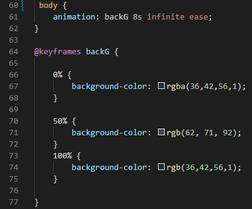
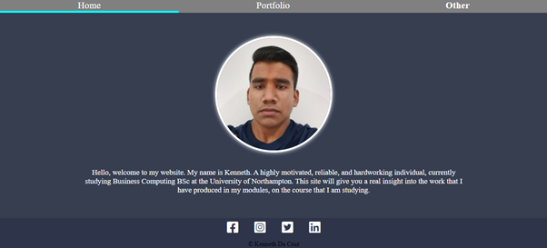

Final touches....
Finally, once I had finished adding the content, I decided to experiment with and create keyframe animations. I decided to created a animated background and enhance my website, instead of just using one static colour for the background. Then, experimented with the different gradients, where one gradient, transitioned into another. I used infinite ease to create a smooth transition. The transition will start slowly, then quickly change to a lighter gradient and then slowly end the transition, by transitioning back to its original gradient. I also specfied a specific duration, which was 8s. It smoothly transitioned to the specified gradients after the specified duration. I had to spend a bit of time, experimenting with the different percentages, to make the transition as smoooth as possible.. After several experiments, I finally achieved it, as I was able to experiment with different percentages and gradients, to create a smooth transition and therefore an infinite animated background. I was really happy with the result of the animation. Overall, I am really proud of the website that I have developed.
 